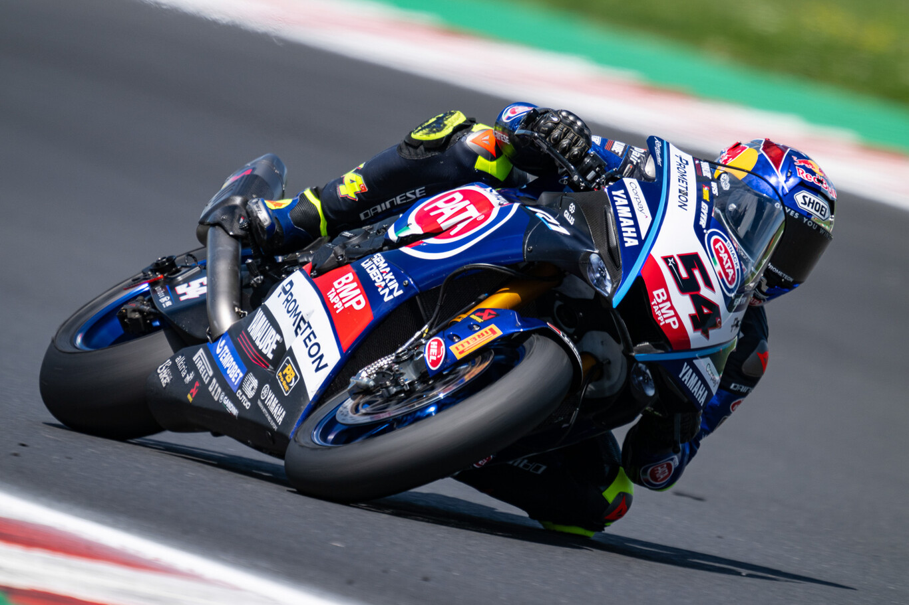

Toprak Razgatlioglu se separa de Yamaha: el turco no correrá con ellos ni en MotoGP ni en las Superbikes
Toprak Razgatlioglu no seguirá corriendo con Yamaha la próxima temporada. El piloto turco acaba de anunciar que se separa de la marca con la que fue campeón, con la que no correrá ni en MotoGP ni en el mundial de Superbikes. La relación entre ambas partes ya estaba tensa y finalmente Razgatlioglu dejará de vestir de azul.
Ahora el futuro de Razgatlioglu es una incógnita. Parece que el turco podría estar cerca de firmar con BMW e intentar levantar a la marca alemana en Superbikes, pero no es la única opción que tiene sobre la mesa. Lo que está claro es que el proyecto de Yamaha en el mundial de Superbikes se acaba de llevar un golpe.
El comunicado de la ruptura dice así: "Quiero agradecer a toda la familia Yamaha el amor y el respeto que me han mostrado. Ganar el campeonato del mundo era mi sueño cuando firmé con Yamaha, y juntos logramos ese objetivo. Para la próxima temporada siento que necesito un nuevo desafío, y aunque había una oportunidad en MotoGP, no sentí la misma conexión con la MotoGP que la que tengo con la Superbike. Pero si decido quedarme en WorldSBK, necesito un nuevo objetivo, una nueva ambición. Lamento dejar Yamaha, tanto la marca como las personas, ya que tenemos una muy buena relación, pero el cambio es parte de cualquier deporte y es normal para cualquier profesional. Así que, muchas gracias a Yamaha Motor Company, Yamaha Motor Europe, Yamaha Motor Turkiye, al equipo Pata Yamaha Prometeon WorldSBK y especialmente a mi equipo, que ha trabajado tan duro para mí".